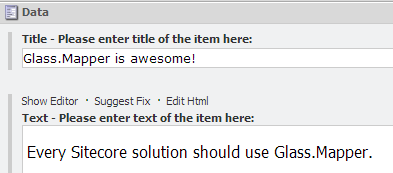
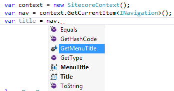

When working with Glass.Mapper it isn't necessary to create concrete models, instead you can use interfaces to reduce the amount of code you have to write.
In my solution I have the following two fields:
I can create the following interface to represent this item:
public interface IDemoItem
{
string Title { get; set; }
string Text { get; set; }
}
I can then use this interface to get content from Sitecore using any of the methods available in Glass.Mapper, for example:
var context = new SitecoreContext();
var item = context.GetCurrentItem<IDemoItem>();
Using interfaces can speed up delivery because you can write less code, it also allows you to replicate the multiple template inheritance in Sitecore because interfaces can inherit multiple other interfaces. This means that you can write an interface that matches each template exactly in Sitecore:
Interfaces also support fluent configuration and attribute configuration as well as On Demand mapping.
You may still want to add functionality to your models, such as a fallback field, but this typically means using a concrete class and this would mean giving up the multiple inheritance features of interfaces. For example take the following Navigation class that has a GetMenuTitle method to determine if the MenuTitle field or the Title field should be used:
public class Navigation
{
public virtual string MenuTitle { get; set; }
public virtual string Title { get; set; }
public string GetMenuTitle()
{
return string.IsNullOrWhiteSpace(MenuTitle) ? Title : MenuTitle;
}
}
How do we do this with an interface? This can be achieved using extension methods and creating a companion extension class for the interface. I have changed my Navigation class into an interface:
public interface INavigation
{
string MenuTitle { get; set; }
string Title { get; set; }
}
I can now create a companion extension class with the GetMenuTitle method:
public static class INavigationExtensions
{
public static string GetMenuTitle(this INavigation target)
{
return string.IsNullOrWhiteSpace(target.MenuTitle) ? target.Title : target.MenuTitle;
}
}
I can now replicate the multiple template inheritance in Sitecore and still add business logic to my models. In Visual Studio when I access the members on the interface I see the same options as I had with the original concrete class:
I would recommend putting your extension classes in the same file as the interface so that they are easy to find.
This tutorial has shown how easy it is to use interfaces with Glass.Mapper.